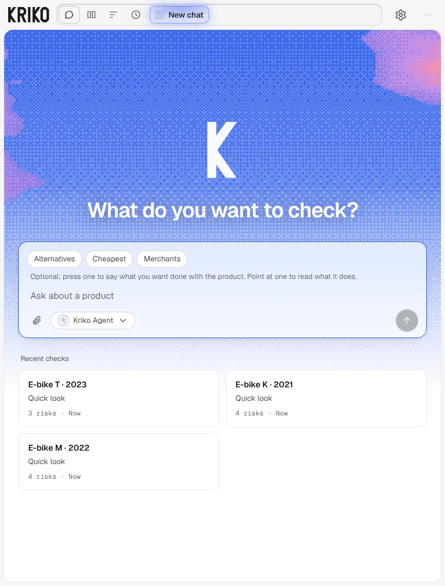
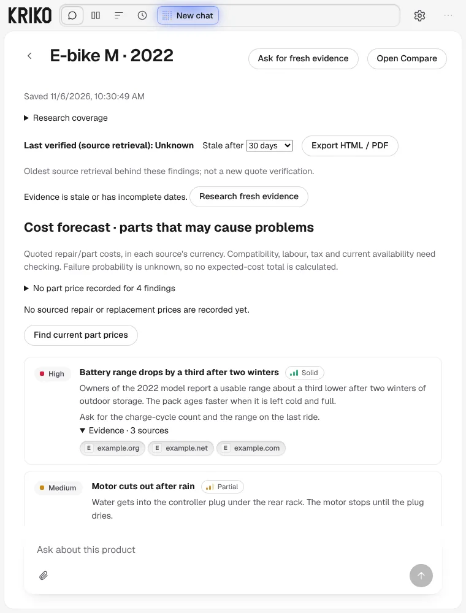
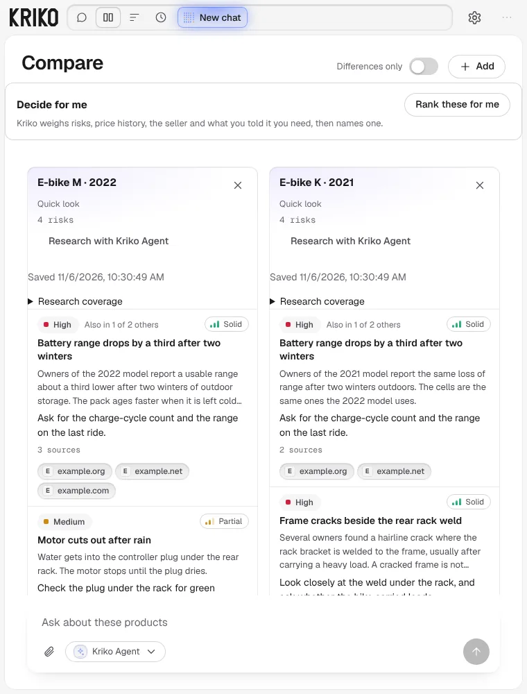
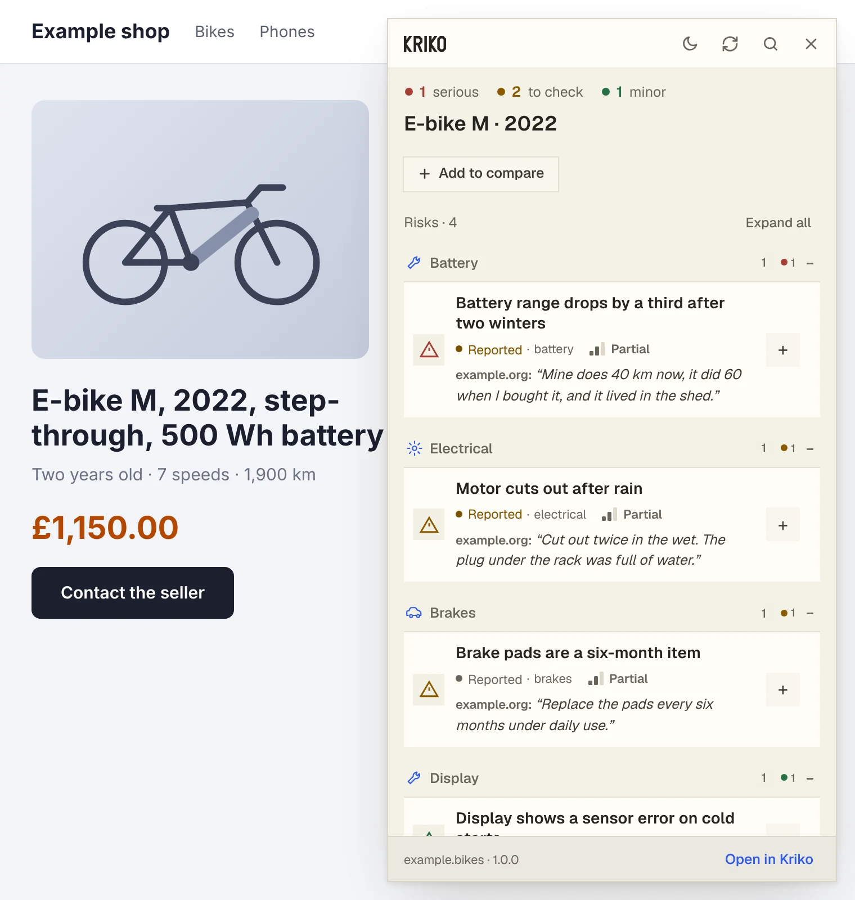
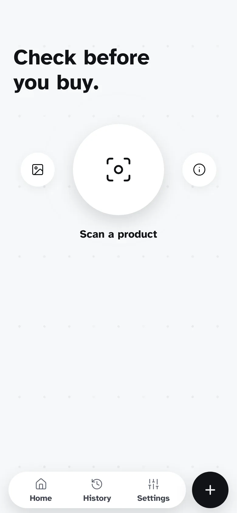
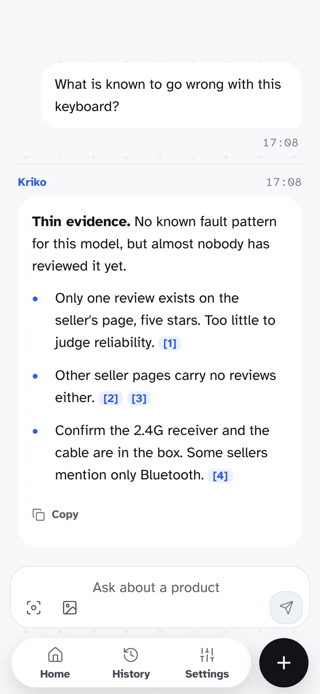

Check before you buy.






Desktop
On your computer.
Phone
On your phone.
-
Scan
-
Read
-
Know
One finding, as an example
Battery range drops by a third after two winters.
Owner forum threadexample.orgFrom an invented e-bike
Download
Get Kriko.
Windows
Download the installerOn a phone? Kriko runs on a Windows computer. Email yourself the link.
Android
Get the Android appBrowser
Browser extensionHelp
Questions
What is Kriko?
Kriko is a free, open-source product research app that shows known problems with an exact model and variant, with sources beside each finding. Use the desktop app and browser extension while shopping, or browse known problems by product without installing anything.
Does Kriko work offline?
Installed catalog lookups work offline and need no account or AI key. Research beyond those catalogs needs an internet connection and a connected agent. A paid provider bills your own account.
How do I check a product before buying?
Open its listing with Kriko running and use the browser extension. Confirm the exact model and variant, read the findings and open their sources. Use those reports to decide what to inspect or ask the seller. The step-by-step guide shows the process. No findings means a gap in coverage, not proof that a product is trouble-free.
Where does my research live?
On your computer. Catalogs, history, your shortlist and settings stay with you, and there is no account to create. Online research sends your question and the pages it read to the provider you choose. Read the privacy policy for every case.
What is the catch?
Kriko is free and open source under the MIT license. Catalog lookups need no key. If you choose a paid AI provider for research, that provider bills your own account.
Can I check new products too?
Yes. New and used products both have problems that are easy to miss: owner reports, repair findings and concerns that only affect one variant. Quick look researches beyond your installed catalogs with your chosen agent.
What if a concern is not confirmed?
A report can point at something worth checking without proving a defect. Follow the pages behind it, compare the explanations and see what is still unanswered. You decide what the evidence means for your purchase.